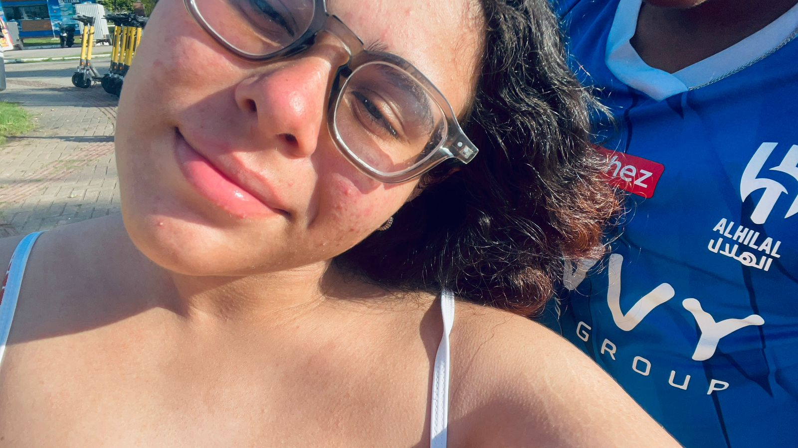
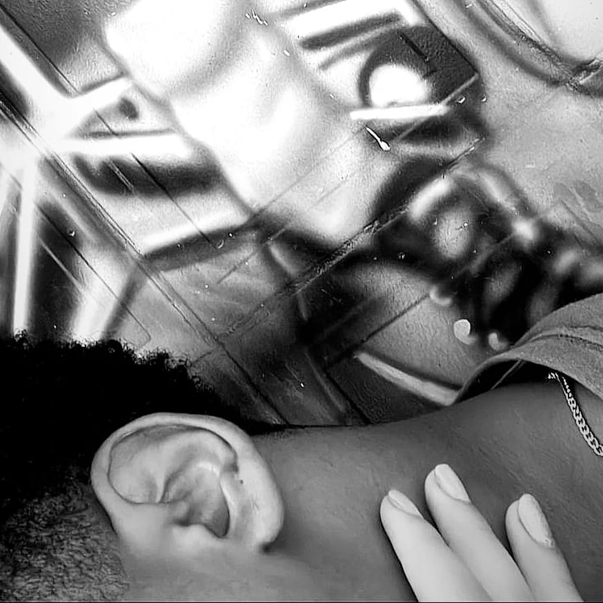
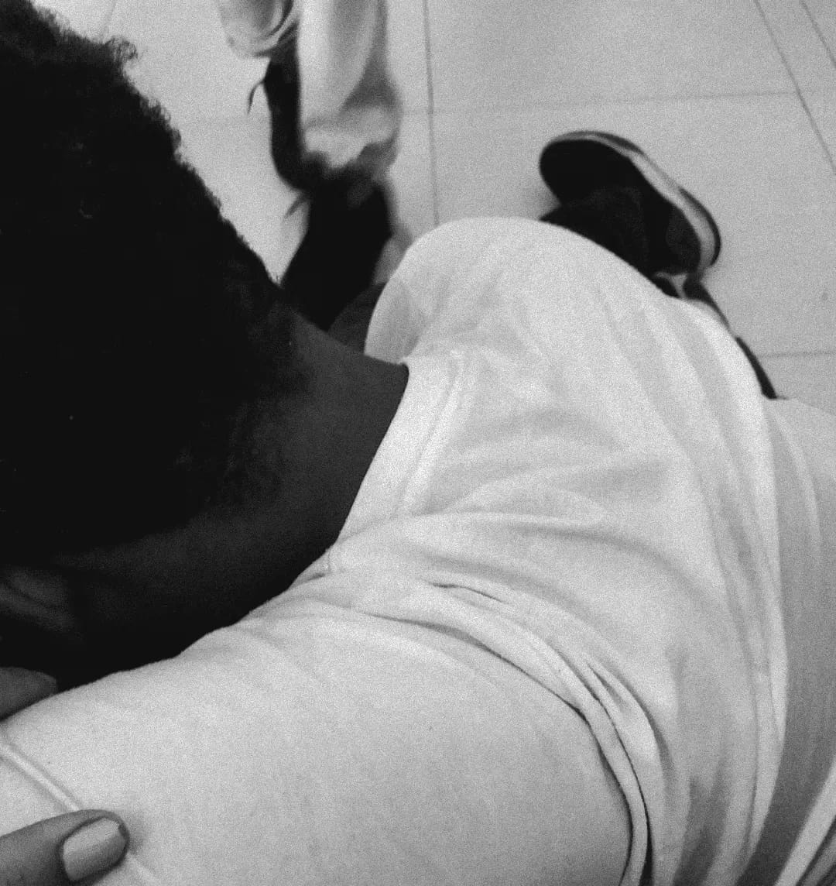
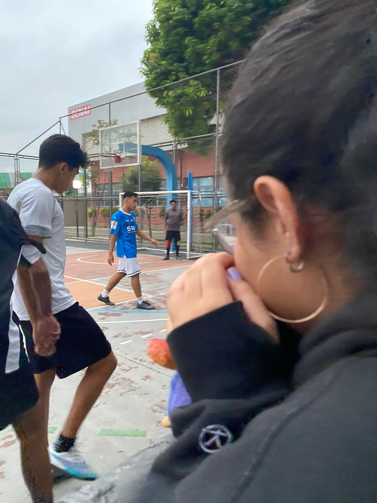
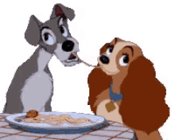
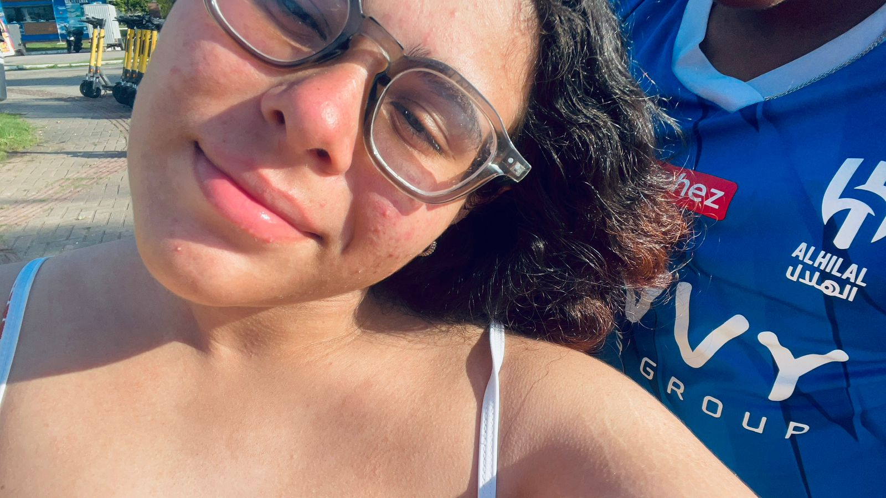
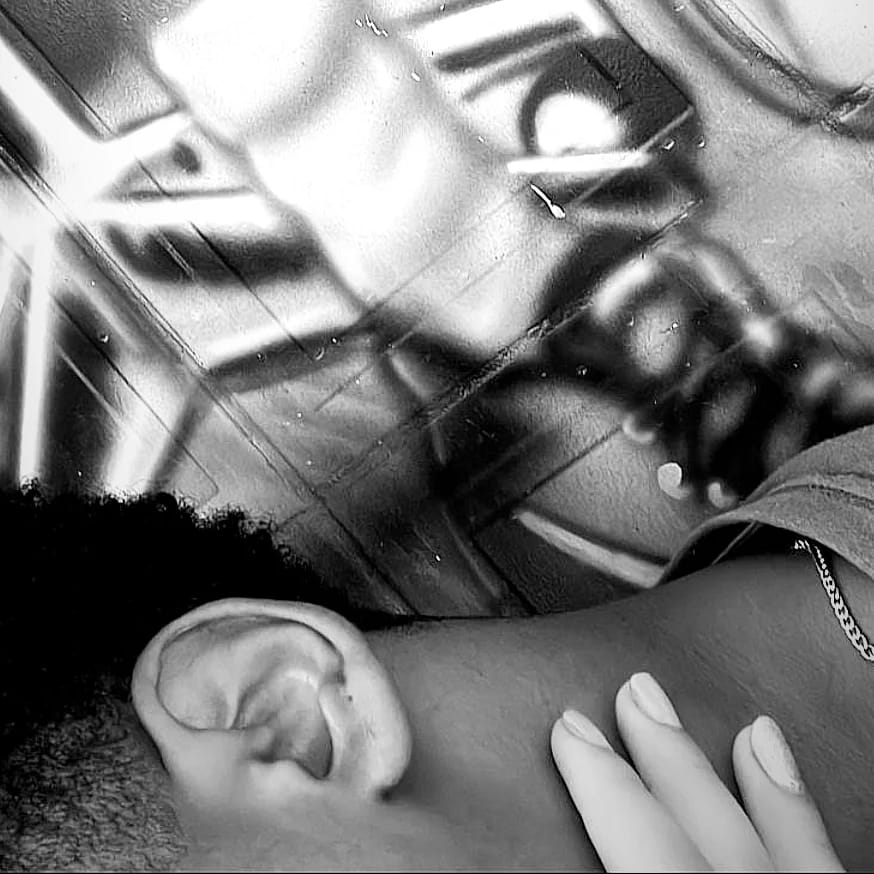
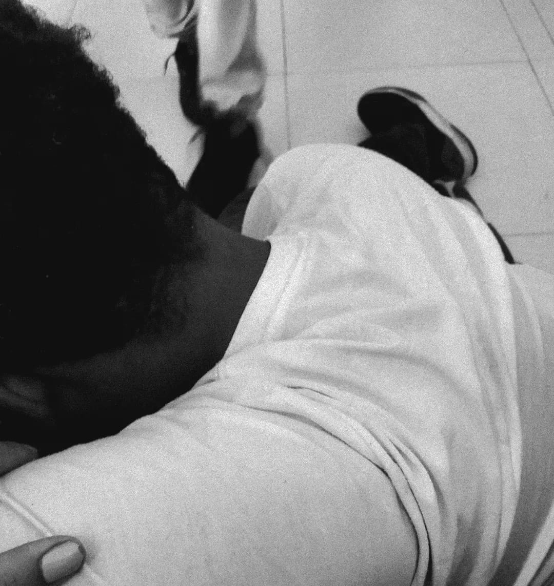
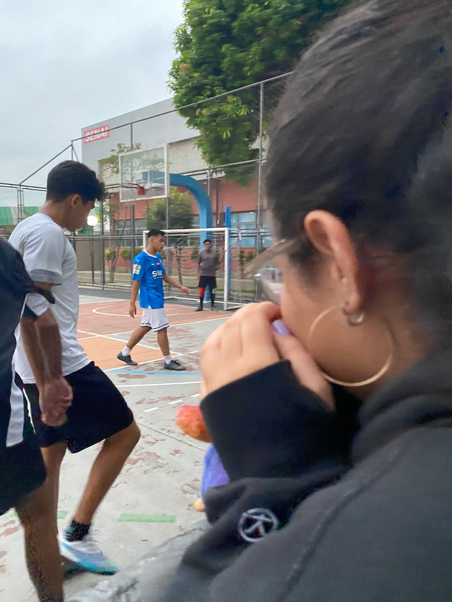
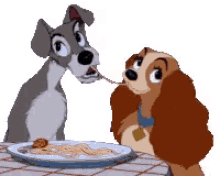

༘⋆♡⸝⸝💌⊹。°˖➴
 









♫⋆｡♪ ₊˚♬ﾟ.
Você é colorida e eu sou preto e branco Você dá uma corrida e eu dou mais um catranco Você gosta do caminho do meio, eu chego e fico de canto Você curtindo o recreio, eu de novo aula matando Você fazendo oferenda, eu vivo roubando dos santo Eu não curto finais felizes, você com eles fica em pranto Meu anjo, minha companheira, te presenteio com o mundo inteiro Mermo' que eu não precise de tanto Você vai de temaki, salmão e cream cheese Eu vou de todos os pratos, e um punhado de haxi Você com quase nada tem o suficiente pra crise Eu sou estourado, mal-humorado e mermo' assim sou take it easy Você é aurora, eu sou fim de tarde Você é agora, eu sou um pouco mais tarde Você é correria na hora da alvorada Eu sou preguiça, faço história nas madrugada Você é Paris, gata, eu sou Bangkok Você sempre feliz e eu sempre multilock Você ceramida, anti frizz, eu quase com dreadlock Você Grande Rio, Imperatriz, eu 69' Woodstock Você like a G6, eu rock das antiga Você prática e determinada, eu evito a fadiga Você deitada na canga, sol, eu altinha, ganja, trilha Você quer ver minha vó, eu fujo do almoço em família Você se irrita facin', eu sempre quem boto pilha Eu de Cuba Libre, gin, você Absolut Vanilia Você é amor eterno, lembrança pra vida inteira Eu sou romance de verão, sou brisa leve passageira Você é bom senso, eu sou impulso mal pensado Você é alvo no futuro e eu méritos do passado Você sorri o dia inteiro, eu metade mal humorado Você é tipo papel machê, eu sou tipo um papel pardo Você é yang, eu sou yin, você é início, eu sou fim Você é tudo pra mim, você baixinha, eu magrin' Eu falo muito então, você fala muito enfim Você pede uma massagem e eu peço um carin' Você admira as estrelas, eu escuto a natureza Você feliz de nascença, eu numa eterna tristeza Eu tento entender o mundo e você admira a beleza Você vem de meu amor e eu vou de minha princesa Você é aurora, eu sou fim de tarde Você é agora, eu sou um pouco mais tarde Você é correria na hora da alvorada Eu sou preguiça, faço história nas madrugada Você é Nova York, gata, eu sou Tijuana Você de Farm Shop, eu de chinelo Havaiana Você night hip hop, eu de eletro na praiana Você é uma peça top, eu guerreiro protejo a dama Você reclama à toa, eu quero ficar de boa Você vem pro meu quarto e o nosso tempo quase voa Eu te desejo, tu me deseja, você de suco eu de cerveja Eu de Playboy você de Veja, eu sou o bolo, você a cereja Você me beija, eu te beijo, entramos em comunhão Eu seguro seu cabelo, você me olha com tesão A gente mantêm a distância, precisamos um do outro Segredos e mistérios, conexões do nosso corpo Aí é só eu e você, aquele sonzin' clichê De um CD meu da Sade, que horas são? Vai saber Deixa o relógio correr, todo dia é de lazer Daqui a pouco o Sol vai nascer, nossa noite do prazer Quer gritar, eu quero bater (você) Quer beijar eu quero morder (você) Foda-se o mundo la fora, é eu você e o colchão Vem de nariz empinado pra comer na minha mão Te faço chegar no ponto, protagonistas da nossa trama Na pista discreta e ponto, flutua como uma dama Mas se solta na hora certa quando deita na minha cama Nessas horas que afirmo, vagabundo também ama
▶︎ •၊၊||၊|။||||။၊|• 0:10